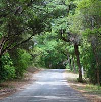
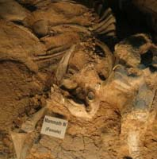
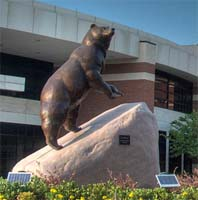

Three days in Waco are not enough
Whether you're into the arts, a sports fan, or outdoors person, there's plenty to do in Waco.
-
1
Friday - Enjoy the outdoors
Getting to Waco is easy -- located only an hour and a half from both Dallas and Austin. Picking your hotel should be easy and the Hilton or Clarion are great choices.
If you're visiting in the summer, you can listen to a free concert at Indian Spring Park, otherwise you could go ride mountain bikes, play a round of disc golf, or even fish or kayak in the 416-acre Cameron Park which runs along the Brazos River.
For a dinner, you can cool off at one of the restaurants downtown. Cricket's offers over 100 beers on draft and has great burgers. Ninfa's -- a few doors down -- has a quality Mexican menu with their renowned Ninfaritas.
-
2
Saturday - Fossilized expedition
Fill up with a home made Mexican breakfast at Lolitas Restaurante before heading off to the excavation site of the Waco mammoths, just outside of the main Waco area.
On the way back, visit McLennan Community College, which features a beautiful campus adjacent to Cameron Park and the Brazos River.
For lunch take a load off at Health Camp or Elite Grill, both located on the Waco Circle.
Relax a little before heading off to the bars in downtown Waco. There's Trojan's Cork & Keg, Treff's, Ice House, Cricket's and Sams on the Square among others.
-
3
Sunday - Baylor University
In the morning take a trip to Olive Branch where they'll have a full menu for breakfast or early lunch.
After you've filled up on pancakes or sandwiches, visit Baylor University's campus and see the sites, such as Pat Neff Hall, the Immortal Ten Memorial, or the Baylor Sciences Building.
If you're in the Fort Worth, Austin, or Dallas areas, you should definitely consider heading into Waco and visiting the city that's often forgotton but boasts one of the most beautiful municipal parks in the nation, a rich variety of cultural experiences, and nearly no traffic if you're bringing your own car!